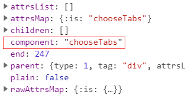

前面花了两节的内容介绍了组件，从组件的原理讲到组件的应用，包括异步组件和函数式组件的实现和使用场景。众所周知，组件是贯穿整个Vue设计理念的东西，并且也是指导我们开发的核心思想，所以接下来的几篇文章，将重新回到组件的内容去做源码分析，首先会从常用的动态组件开始，包括内联模板的原理，最后会简单的提到内置组件的概念，为之后的文章埋下伏笔。
12.1 动态组件§
动态组件我相信大部分在开发的过程中都会用到，当我们需要在不同的组件之间进行状态切换时，动态组件可以很好的满足我们的需求，其中的核心是component标签和is属性的使用。
12.1.1 基本用法§
例子是一个动态组件的基本使用场景，当点击按钮时，视图根据this.chooseTabs值在组件child1,child2,child3间切换。
// vue
<div id="app">
<button @click="changeTabs('child1')">child1</button>
<button @click="changeTabs('child2')">child2</button>
<button @click="changeTabs('child3')">child3</button>
<component :is="chooseTabs">
</component>
</div>
// js
var child1 = {
template: '<div>content1</div>',
}
var child2 = {
template: '<div>content2</div>'
}
var child3 = {
template: '<div>content3</div>'
}
var vm = new Vue({
el: '#app',
components: {
child1,
child2,
child3
},
methods: {
changeTabs(tab) {
this.chooseTabs = tab;
}
}
})
12.1.2 AST解析§
<component>的解读和前面几篇内容一致，会从AST解析阶段说起，过程也不会专注每一个细节，而是把和以往处理方式不同的地方特别说明。针对动态组件解析的差异，集中在processComponent上，由于标签上is属性的存在，它会在最终的ast树上打上component属性的标志。
// 针对动态组件的解析
function processComponent (el) {
var binding;
// 拿到is属性所对应的值
if ((binding = getBindingAttr(el, 'is'))) {
// ast树上多了component的属性
el.component = binding;
}
if (getAndRemoveAttr(el, 'inline-template') != null) {
el.inlineTemplate = true;
}
}
最终的ast树如下：

12.1.3 render函数§
有了ast树，接下来是根据ast树生成可执行的render函数，由于有component属性，render函数的产生过程会走genComponent分支。
// render函数生成函数
var code = generate(ast, options);
// generate函数的实现
function generate (ast,options) {
var state = new CodegenState(options);
var code = ast ? genElement(ast, state) : '_c("div")';
return {
render: ("with(this){return " + code + "}"),
staticRenderFns: state.staticRenderFns
}
}
function genElement(el, state) {
···
var code;
// 动态组件分支
if (el.component) {
code = genComponent(el.component, el, state);
}
}
针对动态组件的处理逻辑其实很简单，当没有内联模板标志时(后面会讲),拿到后续的子节点进行拼接，和普通组件唯一的区别在于，_c的第一个参数不再是一个指定的字符串，而是一个代表组件的变量。
// 针对动态组件的处理
function genComponent (
componentName,
el,
state
) {
// 拥有inlineTemplate属性时，children为null
var children = el.inlineTemplate ? null : genChildren(el, state, true);
return ("_c(" + componentName + "," + (genData$2(el, state)) + (children ? ("," + children) : '') + ")")
}
12.1.4 普通组件和动态组件的对比§
其实我们可以对比普通组件和动态组件在render函数上的区别，结果一目了然。
普通组件的render函数§
"with(this){return _c('div',{attrs:{"id":"app"}},[_c('child1',[_v(_s(test))])],1)}"
动态组件的render函数§
"with(this){return _c('div',{attrs:{"id":"app"}},[_c(chooseTabs,{tag:"component"})],1)}"
简单的总结，动态组件和普通组件的区别在于：
ast阶段新增了component属性，这是动态组件的标志- 产生
render函数阶段由于component属性的存在，会执行genComponent分支，genComponent会针对动态组件的执行函数进行特殊的处理，和普通组件不同的是，_c的第一个参数不再是不变的字符串，而是指定的组件名变量。 render到vnode阶段和普通组件的流程相同，只是字符串换成了变量，并有{ tag: 'component' }的data属性。例子中chooseTabs此时取的是child1。
有了render函数，接下来从vnode到真实节点的过程和普通组件在流程和思路上基本一致，这一阶段可以回顾之前介绍组件流程的分析
12.1.5 疑惑§
由于自己对源码的理解还不够透彻,读了动态组件的创建流程之后，心中产生了一个疑问，从原理的过程分析，动态组件的核心其实是is这个关键字，它在编译阶段就以component属性将该组件定义为动态组件，而component作为标签好像并没有特别大的用途，只要有is关键字的存在，组件标签名设置为任意自定义标签都可以达到动态组件的效果？(componenta, componentb)。这个字符串仅以{ tag: 'component' }的形式存在于vnode的data属性存在。那是不是说明，所谓动态组件只是由于is的单方面限制？那component标签的意义又在哪里？
12.2 内联模板§
由于动态组件除了有is作为传值外，还可以有inline-template作为配置,借此前提，刚好可以理清楚Vue中内联模板的原理和设计思想。Vue在官网有一句醒目的话，提示我们inline-template 会让模板的作用域变得更加难以理解。因此建议尽量使用template选项来定义模板，而不是用内联模板的形式。接下来，我们通过源码去定位一下所谓作用域难以理解的原因。
我们先简单调整上面的例子，从使用角度上入手：
// html
<div id="app">
<button @click="changeTabs('child1')">child1</button>
<button @click="changeTabs('child2')">child2</button>
<button @click="changeTabs('child3')">child3</button>
<component :is="chooseTabs" inline-template>
<span>{{test}}</span>
</component>
</div>
// js
var child1 = {
data() {
return {
test: 'content1'
}
}
}
var child2 = {
data() {
return {
test: 'content2'
}
}
}
var child3 = {
data() {
return {
test: 'content3'
}
}
}
var vm = new Vue({
el: '#app',
components: {
child1,
child2,
child3
},
data() {
return {
chooseTabs: 'child1',
}
},
methods: {
changeTabs(tab) {
this.chooseTabs = tab;
}
}
})
例子中达到的效果和文章第一个例子一致，很明显和以往认知最大的差异在于，父组件里的环境可以访问到子组件内部的环境变量。初看觉得挺不可思议的。我们回忆一下之前父组件能访问到子组件的情形，从大的方向上有两个:
1. 采用事件机制，子组件通过$emit事件，将子组件的状态告知父组件，达到父访问子的目的。
2. 利用作用域插槽的方式，将子的变量通过props的形式传递给父，而父通过v-slot的语法糖去接收，而我们之前分析的结果是，这种方式本质上还是通过事件派发的形式去通知父组件。
之前分析过程也有提过父组件无法访问到子环境的变量，其核心的原因在于： 父级模板里的所有内容都是在父级作用域中编译的；子模板里的所有内容都是在子作用域中编译的。 那么我们有理由猜想，内联模板是不是违背了这一原则，让父的内容放到了子组件创建过程去编译呢？我们接着往下看：
回到ast解析阶段，前面分析到，针对动态组件的解析，关键在于processComponent函数对is属性的处理，其中还有一个关键是对inline-template的处理，它会在ast树上增加inlineTemplate属性。
// 针对动态组件的解析
function processComponent (el) {
var binding;
// 拿到is属性所对应的值
if ((binding = getBindingAttr(el, 'is'))) {
// ast树上多了component的属性
el.component = binding;
}
// 添加inlineTemplate属性
if (getAndRemoveAttr(el, 'inline-template') != null) {
el.inlineTemplate = true;
}
}
render函数生成阶段由于inlineTemplate的存在，父的render函数的子节点为null,这一步也决定了inline-template下的模板并不是在父组件阶段编译的,那模板是如何传递到子组件的编译过程呢？答案是模板以属性的形式存在，待到子实例时拿到属性值
function genComponent (componentName,el,state) {
// 拥有inlineTemplate属性时，children为null
var children = el.inlineTemplate ? null : genChildren(el, state, true);
return ("_c(" + componentName + "," + (genData$2(el, state)) + (children ? ("," + children) : '') + ")")
}
我们看看最终render函数的结果，其中模板以{render: function(){···}}的形式存在于父组件的inlineTemplate属性中。
"_c('div',{attrs:{"id":"app"}},[_c(chooseTabs,{tag:"component",inlineTemplate:{render:function(){with(this){return _c('span',[_v(_s(test))])}},staticRenderFns:[]}})],1)"
最终vnode结果也显示，inlineTemplate对象会保留在父组件的data属性中。
// vnode结果
{
data: {
inlineTemplate: {
render: function() {}
},
tag: 'component'
},
tag: "vue-component-1-child1"
}
有了vnode后，来到了关键的最后一步，根据vnode生成真实节点的过程。从根节点开始，遇到vue-component-1-child1，会经历实例化创建子组件的过程，实例化子组件前会先对inlineTemplate属性进行处理。
function createComponentInstanceForVnode (vnode,parent) {
// 子组件的默认选项
var options = {
_isComponent: true,
_parentVnode: vnode,
parent: parent
};
var inlineTemplate = vnode.data.inlineTemplate;
// 内联模板的处理，分别拿到render函数和staticRenderFns
if (isDef(inlineTemplate)) {
options.render = inlineTemplate.render;
options.staticRenderFns = inlineTemplate.staticRenderFns;
}
// 执行vue子组件实例化
return new vnode.componentOptions.Ctor(options)
}
子组件的默认选项配置会根据vnode上的inlineTemplate属性拿到模板的render函数。分析到这一步结论已经很清楚了。内联模板的内容最终会在子组件中解析，所以模板中可以拿到子组件的作用域这个现象也不足为奇了。
12.3 内置组件§
最后说说Vue思想中的另一个概念，内置组件，其实vue的官方文档有对内置组件进行了列举，分别是component, transition, transition-group, keep-alive, slot，其中<slot>我们在插槽这一节已经详细介绍过，而component的使用这一节也花了大量的篇幅从使用到原理进行了分析。然而学习了slot,component之后，我开始意识到slot和component并不是真正的内置组件。**内置组件是已经在源码初始化阶段就全局注册好的组件。**而<slot>和<component>并没有被当成一个组件去处理，因此也没有组件的生命周期。slot只会在render函数阶段转换成renderSlot函数进行处理，而component也只是借助is属性将createElement的第一个参数从字符串转换为变量，仅此而已。因此重新回到概念的理解，**内置组件是源码自身提供的组件，**所以这一部分内容的重点，会放在内置组件是什么时候注册的，编译时有哪些不同这两个问题上来。这一部分只是一个抛砖引玉，接下来会有文章专门详细介绍keep-alive，transition, transition-group的实现原理。
12.3.1 构造器定义组件§
Vue初始化阶段会在构造器的components属性添加三个组件对象,每个组件对象的写法和我们在自定义组件过程的写法一致，有render函数，有生命周期，也会定义各种数据。
// keep-alive组件选项
var KeepAlive = {
render: function() {}
}
// transition 组件选项
var Transition = {
render: function() {}
}
// transition-group 组件选项
var TransitionGroup = {
render: function() {},
methods: {},
···
}
var builtInComponents = {
KeepAlive: KeepAlive
};
var platformComponents = {
Transition: Transition,
TransitionGroup: TransitionGroup
};
// Vue构造器的选项配置，compoents选项合并
extend(Vue.options.components, builtInComponents);
extend(Vue.options.components, platformComponents);
extend方法我们在系列的开头，分析选项合并的时候有说过，将对象上的属性合并到源对象中，属性相同则覆盖。
// 将_from对象合并到to对象，属性相同时，则覆盖to对象的属性
function extend (to, _from) {
for (var key in _from) {
to[key] = _from[key];
}
return to
}
最终Vue构造器拥有了三个组件的配置选项。
Vue.components = {
keepAlive: {},
transition: {},
transition-group: {},
}
12.3.2 注册内置组件§
仅仅有定义是不够的。组件需要被全局使用还得进行全局的注册，这其实在选项合并章节已经阐述清楚了。Vue实例在初始化过程中，最重要的第一步是进行选项的合并，而像内置组件这些资源类选项会有专门的选项合并策略，最终构造器上的组件选项会以原型链的形式注册到实例的compoonents选项中(指令和过滤器同理)。
// 资源选项
var ASSET_TYPES = [
'component',
'directive',
'filter'
];
// 定义资源合并的策略
ASSET_TYPES.forEach(function (type) {
strats[type + 's'] = mergeAssets; // 定义默认策略
});
function mergeAssets (parentVal,childVal,vm,key) {
var res = Object.create(parentVal || null); // 以parentVal为原型创建一个空对象
if (childVal) {
assertObjectType(key, childVal, vm); // components,filters,directives选项必须为对象
return extend(res, childVal) // 子类选项赋值给空对象
} else {
return res
}
}
关键的两步一个是var res = Object.create(parentVal || null);，它会以parentVal为原型创建一个空对象，最后是通过extend将用户自定义的component选项复制到空对象中。选项合并之后，内置组件也因此在全局完成了注册。
{
components: {
child1,
__proto__: {
keepAlive: {},
transition: {},
transitionGroup: {}
}
}
}
最后我们看看内置组件对象中并没有template模板，而是render函数，除了减少了耗性能的模板解析过程，我认为重要的原因是内置组件并没有渲染的实体。最后的最后，让我们一起期待后续对keep-alive原理分析，敬请期待。
12.4 小结§
这节我们详细的介绍了动态组件的原理，我们经常使用<component :is="">以达到不同组件切换的目的，实际上是由于is这个关键字让模板编译成render函数时，组件render的标签是变量，这样在渲染阶段，随着数据的不同会渲染不同的组件。动态组件还有一种用法是使用内联模板去访问子组件的数据，这又增加了一种子父组件通信的方法。但是官方并不建议我们这样做，因为内联模板会让作用域变得混乱。内联组件实现父子通信的原理是它让父组件的编译过程放到了子组件，这样顺利成章的父组件就可以访问到子组件的变量。文章的最后引出了内置组件，Vue中真正的内置组件只有keep-alive, transition, transition-group三种，他们本质上是在内部定义好组件选项，并进行全局注册。下一节，我们将进入keep-alive内置组件的深度分析。